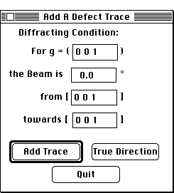

Distributed By: Virtual Labs
Add a Defect Trace Dialog Box
PATH...{Stereographic Projection Object}:Function Menu:Add a Defect
Trace...

Add a Defect Trace Dialog Box
This dialog box is used when the trace of a defect is to be added to the
stereographic projection. The beam direction and g are entered and checked
for orthogonality. The beam direction is automatically rotated to the center
of the projection and g is rotated to the top. The defect trace is added
to the stereographic projection graphically by moving the cursor until the
desired orientation is achieved.
Author: J.ames T.
Stanley
 Desktop
Manual:Dialog Boxes
Desktop
Manual:Dialog Boxes
Distributed By: Virtual Labs
Last Updated:1/12/96 Sat, Apr 27, 1996